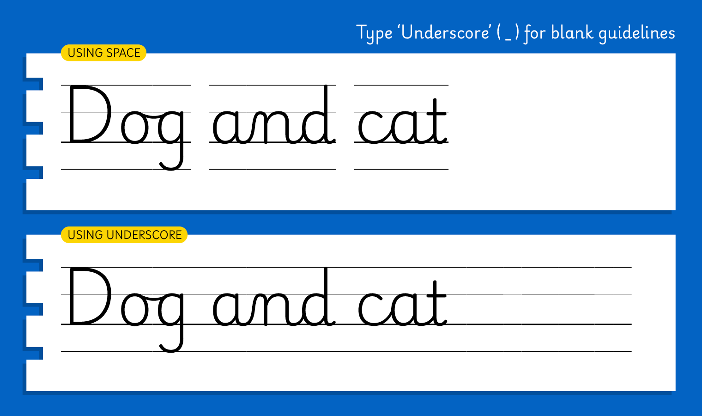

Playwrite USA Modern Guides is a single-weight font designed to harmonize seamlessly with its companion, Playwrite USA Modern. This font includes guideline markers on the baseline, x-height, ascenders, and descenders, providing a visual aid for primary school children. These guides help young learners grasp the proportions of letterforms and assist them in drawing letters with confidence and accuracy.
In the absence of a unified national approach, elementary education in the United States is supported by several private companies that espouse different approaches to teaching handwriting. According to American handwriting expert Kate Gladstone, it is difficult to confidently determine which handwriting models are most commonly taught in the country, but among the most widespread are Zaner-Bloser and D’Nealian, both following a traditional style, and Handwriting Without Tears. Two other programs featuring modern cursive models — Getty-Dubay and Barchowsky Fluent Hand — are rapidly gaining interest as writing models not only for children but also for adults seeking to improve their handwriting.
To contribute, see github.com/TypeTogether/Playwrite.
Guidelines are present in all characters except for those used for letter spacing. To create a versatile font for teachers designing practice sheets that feature guidelines without corresponding letters, the underscore is used as a key character. It replaces the glyph shape with the guidelines and matches the width of the letter space.
Find the detailed characteristics of this country's Model in Playwrite USA Modern.

Playwrite USA Modern Guides appears in font menus with a two-letter country code ‘US’
and a the word ‘Modern’, Playwrite US Modern Guides, and features a single Regular weight.
The download .zip file includes the static font for this guided version.
The Playwrite school fonts are based on the findings of Primarium, a groundbreaking educational effort that documents the history and current practice of handwriting models taught to primary school students worldwide. This typographic engine serves teachers, educators, and parents by generating localized libre fonts. These Playwrite fonts are complemented by Playpen Sans, an informal and fun typeface designed for annotations, instructions, and student notes – that also includes emojis.
For more information about the Primarium project, visit primarium.info and to learn more about handwriting education in the United States of America, see primarium.info/countries/united-states-of-america.
Windows: Download the font file to your computer. Navigate to where you saved the font file and double-click it to open. Click the "Install" button at the top of the font preview window. The font is now installed and ready to be used across your apps.
macOS: After downloading the font file to your Mac, right-click it in Finder and select "Open With" > "Font Book". Then, click "Install Font" in the font preview window that pops up. The font is now installed and ready to be used across your apps.
The Playwrite font family uses complex OpenType features to generate connected writing. Some common applications require these features to be manually activated.
Note: This font family doesn't include Bold or Italic styles, so please avoid applying them in text editors. If you use the common 'B' and 'I' buttons, you will automatically generate low-quality styles.
Google Docs and Slides: From the font selector drop-down, go to "More Fonts" and search for the desired font name, in this case, "Playwrite USA Modern Guides", and click OK. If some text is already selected, the font choice will apply.
Microsoft Word: Go to Format in the Menu bar, select Font, and then the Advanced tab. Activate "Contextual Alternates" and "Kerning for fonts below" to apply these settings to all text sizes.
LibreOffice: In macOS, to select the different styles, go to Format in the Menu bar, select Character, and use the Typeface menu.
Adobe InDesign: Open the Paragraph Panel and select Adobe "World-Ready Paragraph Composer" from the contextual menu.
Adobe Illustrator: Navigate to Preferences > Type, check the "Show Indic Options" box, and close preferences. Then open the Paragraph Panel and select "Middle Eastern Composer" from the contextual menu.
Adobe Photoshop: Access the Paragraph Panel, then choose "World-Ready Layout" from the contextual menu.
The above instructions are also available in PDF format here.